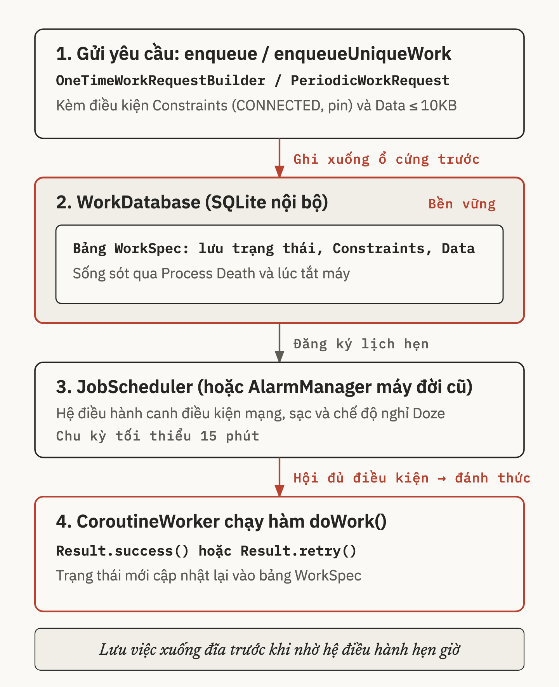

WorkManager
Bản 30 giây
Khi bạn tải ảnh lên máy chủ bằng luồng ngầm thường, việc sẽ đứt ngang nếu người dùng vuốt tắt ứng dụng. WorkManager giải quyết bằng cách ghi công việc vào cơ sở dữ liệu trong máy trước khi nhờ hệ điều hành hẹn giờ chạy. Nhờ vậy, dù điện thoại khởi động lại hay ứng dụng bị đóng, công việc vẫn được chạy tiếp khi có mạng.
Cần biết trước
Vấn đề buộc nó ra đời
Từ Android 5.0 (API 21), Google đưa ra JobScheduler để gom các việc chạy ngầm lại nhằm tiết kiệm pin. Nhưng trên các máy cũ hơn, bạn vẫn phải tự kết hợp AlarmManager (bộ hẹn giờ hệ thống) với BroadcastReceiver.
Từ Android 6.0 đến Android 8.0, hệ điều hành liên tục thêm chế độ nghỉ Doze và cấm ứng dụng tự chạy dịch vụ ngầm. Lập trình viên phải viết nhiều nhánh if-else kiểm tra bản Android, rất dễ làm rớt việc khi người dùng khởi động lại máy.
Tháng 3/2019, Google phát hành WorkManager 1.0.0 để gom mọi API hẹn giờ nền về một mối duy nhất. Bạn chỉ cần khai báo điều kiện mạng hoặc pin, thư viện tự lưu việc xuống đĩa và đánh thức ứng dụng đúng lúc.
Nó thực sự là cái gì
WorkManager không phải là công cụ tạo luồng chạy ngay lập tức cho các tác vụ gắn với màn hình đang mở. Thực chất, nó là một trình đặt lịch bền vững (persistent scheduler). Nó kết hợp cơ sở dữ liệu SQLite nội bộ với JobScheduler của hệ thống. Mỗi yêu cầu gửi vào đều được ghi xuống ổ cứng trước, nên sống sót qua cả Process Death lẫn lúc tắt máy.
Cơ chế

Khi gọi enqueue, WorkManager ghi thông tin công việc và điều kiện Constraints vào bảng WorkSpec trong cơ sở dữ liệu WorkDatabase. Sau đó, nó đăng ký lịch hẹn với dịch vụ JobScheduler của hệ điều hành (hoặc AlarmManager trên các máy đời cũ). Khi máy hội đủ điều kiện như có mạng và đang sạc, hệ điều hành đánh thức ứng dụng để tạo đối tượng CoroutineWorker. Hàm doWork() chạy xong trả về Result.success() hoặc Result.retry(), và trạng thái mới sẽ được cập nhật lại vào bảng WorkSpec.
Đánh đổi
Bạn được đảm bảo công việc chắc chắn sẽ hoàn thành, hỗ trợ nối chuỗi nhiều việc và tự động thử lại khi lỗi mạng. Đổi lại, mỗi lần xếp lịch đều tốn thao tác đọc ghi ổ cứng SQLite. Việc cũng phải chờ hệ điều hành gom nhóm nên có độ trễ. Nó không hợp cho những việc cần phản hồi tức thì ngay khi người dùng vừa bấm nút trên màn hình.
Nguyên lý gốc
Ghi nhận ý định công việc xuống bộ nhớ bền vững trước khi thực thi. Nhờ đó, hệ thống khôi phục được trạng thái sau mọi sự cố sập nguồn.
Key insight
WorkManagerkhông chạy luồng ngầm tức thời theo màn hình, mà bảo toàn công việc trên đĩa qua cả lúc tắt máy.
Khuôn mẫu chuẩn
class UploadWorker(ctx: Context, params: WorkerParameters) : CoroutineWorker(ctx, params) {
override suspend fun doWork(): Result = coroutineScope {
Result.success()
}
}
val request = OneTimeWorkRequestBuilder<UploadWorker>()
.setConstraints(Constraints(requiredNetworkType = NetworkType.CONNECTED))
.build()
WorkManager.getInstance(context).enqueueUniqueWork("sync", ExistingWorkPolicy.KEEP, request)
Bẫy & ranh giới
Đối tượng Data truyền vào Worker bị giới hạn cứng ở mức MAX_DATA_BYTES là 10KB (10240 byte) vì phải lưu vào cột SQLite. Nếu bạn nhét cả chuỗi JSON dài hay ảnh vào Data, ứng dụng sẽ sập ngay với lỗi IllegalStateException. Ngoài ra, việc lặp lại PeriodicWorkRequest có chu kỳ tối thiểu MIN_PERIODIC_INTERVAL_MILLIS là 15 phút, nên đừng dùng nó làm đồng hồ đếm giây. Khi quên dùng enqueueUniqueWork, mỗi lần mở màn hình ứng dụng lại xếp chồng thêm một tác vụ trùng lặp gây cạn pin.
Câu hỏi thực chiến
Hỏi: Tải dữ liệu để vẽ lên màn hình đang mở thì có nên dùng WorkManager không?
Không. Màn hình đang mở cần dữ liệu ngay và nên hủy việc khi thoát ra, bạn hãy dùng Coroutines trong viewModelScope. WorkManager chỉ dành cho việc bắt buộc phải chạy xong kể cả khi người dùng đã đóng hẳn ứng dụng.
Hỏi: Làm sao truyền một file ảnh 5MB vào cho Worker xử lý khi giới hạn Data chỉ có 10KB?
Không truyền nội dung file vào Data. Bạn lưu file ảnh vào bộ nhớ máy hoặc Room, rồi chỉ truyền đường dẫn Uri hoặc mã ID kiểu chuỗi qua Data. Khi hàm doWork() chạy, Worker sẽ đọc file từ đường dẫn đó lên để tải đi.
Hỏi: Vì sao tôi đặt PeriodicWorkRequest chạy mỗi 5 phút mà nó cứ đợi đủ 15 phút mới chạy?
Vì hệ điều hành chặn mức tối thiểu MIN_PERIODIC_INTERVAL_MILLIS là 15 phút để ngăn ứng dụng đánh thức CPU liên tục làm hao pin. Nếu bạn truyền số nhỏ hơn 15 phút, WorkManager sẽ tự động ép chu kỳ lên lại mức 15 phút.
Hỏi: Đang chạy doWork() mà người dùng đi vào thang máy mất mạng thì chuyện gì xảy ra?
Hệ điều hành sẽ báo dừng công việc và hủy coroutine của hàm doWork() đang chạy dở. Vì bạn đã gắn điều kiện cần có mạng trong Constraints, WorkManager giữ việc đó ở trạng thái chờ. Khi máy có sóng trở lại, nó sẽ tự chạy lại công việc.
Ý bắt buộc khi giải thích lại
- Giải thích được cách WorkManager lưu công việc vào bảng WorkSpec trong SQLite trước khi giao cho JobScheduler hẹn giờ.
- Phân biệt được khi nào dùng Coroutines theo vòng đời màn hình và khi nào dùng WorkManager cho việc bền vững.
- Nêu được giới hạn 10KB (10240 byte) của đối tượng Data, chu kỳ tối thiểu 15 phút của PeriodicWorkRequest và tác dụng của enqueueUniqueWork.
- Viết lại được khuôn mẫu chuẩn từ trí nhớ.
Nguồn
- Guide to background work — Android Developers
- WorkManager release notes — Android Developers
- Data API reference — Android Developers
- PeriodicWorkRequest API reference — Android Developers